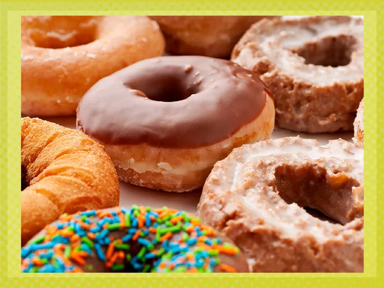

Donut

Description
We don’t need a national day to celebrate donuts—if you’re like us it’s more like a weekly
occurrence—but since National Donut Day is upon us, we’ll seize the moment. As we jump online
to check out recipes or local promotions for a doughnut, bun, sweet roll, cruller, Danish,
eclair, or whatever you call your favorite pastry, we have to wonder...What are the hot donuts
these days?
Ingredients
- 2 ¼ cups bleached cake flour (such as Swans Down®), plus more for work surface, hands and cutter
- 2 teaspoons baking powder
- ¾ teaspoon kosher salt
- ½ teaspoon ground nutmeg
- ¼ teaspoon ground cinnamon
- ⅔ cup sour cream, room temperature
- ½ cup granulated sugar
- 2 large egg yolks, room temperature
- 1 tablespoon unsalted butter, melted and cooled slightly
- 1 tablespoon vegetable oil
- 1 teaspoon vanilla extract
- vegetable oil as needed for frying
Steps
- Whisk together flour, baking powder, salt, nutmeg, and cinnamon in a bowl until well combined.
- Whisk together sour cream, granulated sugar, egg yolks, melted butter, oil, and vanilla in a large bowl until well combined.
- Gradually fold flour mixture into sour cream mixture just until combined. (Dough will be quite soft and sticky.)
- Cover, and chill in the refrigerator until dough is cold and just slightly firmed, about 2 hours.
- Turn dough out onto a heavily-floured surface and pat or roll to 3/8- to 1/2-inch thickness, flouring hands or rolling pin as needed. Cut dough using a floured 3 1/2-inch round cutter. Cut holes in the center of the dough circles using a floured 1 1/4-inch round cutter. Transfer dough rings to a parchment-lined baking sheet. Reroll, and cut dough scraps, repeating process as needed.
- Heat 3 inches of oil in a large Dutch oven over medium heat until a deep-fry thermometer registers 360 degrees F to 365 degrees F (182 degrees C to 185 degrees C), about 30 minutes.
- Fry 1 to 2 donuts at a time until golden brown and cooked through, 1 to 1 1/2 minutes per side, adjusting heat as necessary to maintain oil temperature.
- Transfer donuts to a baking sheet lined with paper towels using a spider strainer. Let drain, and cool for 5 minutes (see note)
- Whisk together powdered sugar, melted butter, hot water, corn syrup, salt, and vanilla in a large bowl for the glaze until smooth and well combined.
- Place 1 warm donut in the powdered sugar mixture, craggy side up; use a spoon to coat donut completely in the glaze.
- Remove donut from glaze using two forks placed underneath; let excess drip off, and then transfer donut to a wire rack placed over a rimmed baking sheet. Repeat with remaining donuts and glaze.
- Let donuts stand until glaze is set before serving, about 25 minutes. Donuts are best enjoyed the same day, but any leftovers can be stored at room temperature in an airtight container for 2 days.